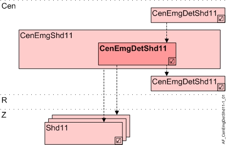

遮阳产品中央紧急探测器 (CenEmgDetShd11)
Overview
应用功能》Central emergency detector for shading 11" (CenEmgDetShd11）使用一个紧急部门的紧急联系人处理紧急行动。

岑 | 中央职能 |
CenEmgShd11 | Central emergency for shading 11 |
CenEmgDetShd11 | Central emergency detector for shading 11 |
R | 房间 |
Z | 房间部分的遮阳区域 |
Shd11 | Shading 11, for shading and daylight use with venetian blinds or awnings、小组成员 |
Function
无电位接触控制（通常来自危险管理系统）紧急区域的百叶窗。
AF 的反应如下：
- Switch is reliable and does not report a hazard: Blinds can be freely operated.
- The switch is reliable and reports a hazard: Blinds UP.
- Switch is defective/unreliable: Blinds UP.
Interface to local and superordinate functions
本地输入和上级 AFs 访问相同的 BACnet 对象。按优先级评估。本地紧急按钮的优先级高于上级中央功能的命令。
Configuration
没有任何。
Interface
界面 | 描述 | 类型 | 参考号 | 所有者 |
|---|---|---|---|---|
ShdEmgDet | Emergency detector for shading | BI | ◉ | Central function / Device |
Engineering and commissioning
没有配置。必须在 CFC 图表上对偏差函数进行编程。